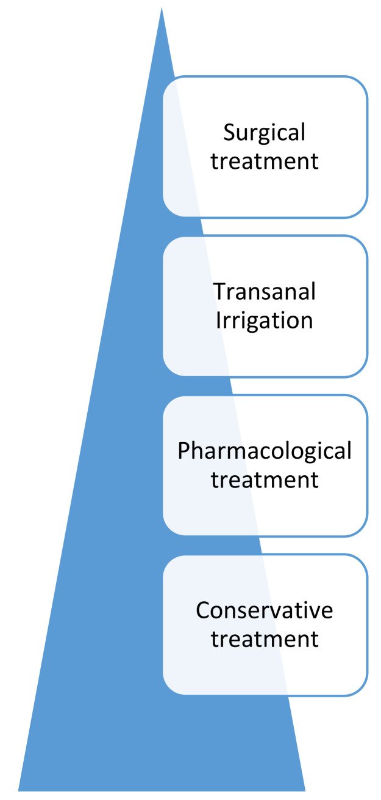
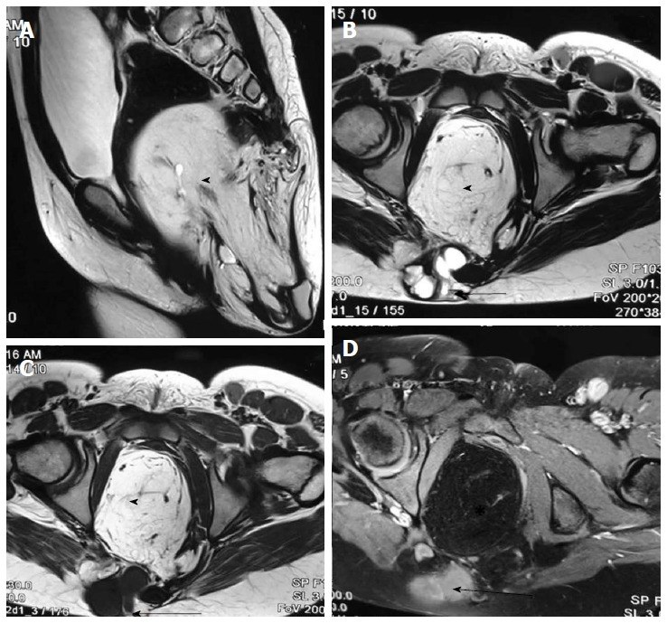
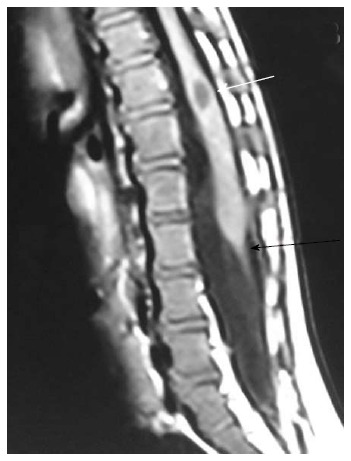

1705 — Theo dõi tiết niệu – đại tiện dài hạn sau cắt u quái cùng cụt (SCT): bàng quang thần kinh, tủy bám thấp, bón và đại tiện không tự chủ
Tags: pattern:bang-quang-than-kinh pattern:thanh-bang-quang-day pattern:ton-luu-nuoc-tieu pattern:tro-nguoc-bang-quang-nieu-quan pattern:u-nuoc-than pattern:bon-man-tinh pattern:tuy-bam-thap vung:bang-quang vung:san-chau vung:cung-cut protocol:SA-than-bang-quang protocol:MCUG protocol:MRI-tuy-cung protocol:nieu-dong-hoc
Mức chắc chắn (certainty): tổng hợp y văn (literature synthesis) — 1 đoàn hệ 46 sơ sinh theo dõi 3–7 năm với niệu động học (PMC13561697), 1 đoàn hệ 41 trẻ có kết cục niệu–tiêu hóa (PMC6910050), 1 đoàn hệ 7 ca Bosnia (PMC10081131), ghép với 1 nghiên cứu niệu động học 47 trẻ để lấy ngưỡng áp lực (PMC13541730), 1 nghiên cứu siêu âm đa thức bàng quang thần kinh lấy ngưỡng hình ảnh (PMC12890931), 2 tài liệu về đại tiện (PMC8069792; PMC13025410), 1 đoàn hệ ruột–bàng quang ở dị tật hậu môn + bất sản cùng để làm hàng phân biệt (PMC13219063) và 1 tổng quan hình ảnh tủy sống (PMC5415887). Không có thử nghiệm ngẫu nhiên; chỗ suy luận được đánh dấu.
Câu chốt: Sau cắt u quái cùng cụt, không phải chỉ theo dõi tái phát u — 19,6% trẻ có rối loạn chức năng đường tiểu dưới (LUTD) trong theo dõi 4,9 ± 1,4 năm, và 8/9 trẻ có triệu chứng có bất thường niệu động học (PMC13561697). Trong khi đó bàng quang thần kinh không tự khỏi: 2 ca Altman IV có cơ detrusor không co với tồn lưu 118 mL và 80 mL, Qmax 1,70 và 3,04 mL/s — những trẻ này cần thông tiểu ngắt quãng (CIC) sớm, không phải "chờ lớn rồi tính". Bài này trả lời: chụp gì, đo gì, khi nào can thiệp, và bẫy nào khiến hình ảnh bình thường mà trẻ vẫn tổn thương thận.
1. Tổng quan bệnh học – cơ chế hình ảnh (TẠI SAO)
1.1 Dịch tễ và phân loại Altman
- Tần suất: SCT 1/30.000–40.000 trẻ sinh sống, ưu thế nữ (PMC13561697); đa số chẩn đoán trước sinh, mổ chủ yếu trong 14 ngày đầu (69,6%), đường mổ cùng cụt sau (89,1%) (PMC13561697).
- Altman I–IV (dựa trên MRI trước mổ, PMC13561697):
- I: chủ yếu ngoài xương cùng, lồi hoàn toàn ra ngoài;
- II: chủ yếu ngoài, > 50% thể tích lồi ra ngoài;
- III: chủ yếu trước xương cùng, ≤ 50% lồi ra ngoài;
- IV: hoàn toàn trước xương cùng, không có khối lồi — hiếm, khoảng 10%, thường phát hiện muộn ở nhũ nhi/trẻ nhỏ.
- Vì sao type III/IV nguy hiểm hơn về chức năng: khối nằm trong khung chậu, đè và tách sàn chậu, bàng quang, trực tràng, và đường mổ phải đi qua đám rối thần kinh cùng – dây chằng cùng cụt; đồng thời type IV không có khối nhìn thấy nên chẩn đoán muộn, khối đã lớn.
1.2 Sinh lý bệnh — 4 cơ chế gây rối loạn tiểu và đại tiện
- Hiệu ứng khối (mass effect) từ trong bào thai: khối lớn chèn ép cơ nâng hậu môn, cơ thắt niệu đạo, bàng quang và kéo giãn các sợi thần kinh cùng; trong type II, đường kính u lớn hơn có ý nghĩa ở nhóm có LUTD (t = −2,781; P < 0,05) (PMC13561697). Nghiên cứu đoàn hệ khác ghi nhận không có LUTD khi u < 9 cm (dẫn trong PMC13561697).
- Tổn thương thần kinh–cơ trong mổ: cắt u + cắt xương cụt làm mất điểm tựa sàn chậu; rễ S2–S4 (đối giao cảm bàng quang, vận động cơ detrusor) và dây thần kinh thẹn (cơ thắt ngoài, cảm giác) có thể bị kéo/đốt.
- Tủy bám thấp (tethered cord) đi kèm: SCT là dị tật thoái triển ống thần kinh thứ phát — cùng nhóm với caudal agenesis, filar lipoma, tight filum (PMC5415887). Tủy bám thấp gây bàng quang thần kinh kiểu dưới (detrusor không co, dung tích nhỏ, PVR cao) và bón/đại tiện không tự chủ.
- Vòng xoắn bàng quang – ruột: bón mạn làm đầy trực tràng → chèn bàng quang → tiểu gấp/són tiểu/ứ nước; điều trị bón đôi khi cải thiện triệu chứng tiểu mà không cần can thiệp niệu khoa.
1.3 TẠI SAO hình ảnh lại như vậy (vật lý + mô bệnh)
- Siêu âm — thành bàng quang dày và trabeculation: khi áp lực trong bàng quang cao kéo dài, cơ detrusor phì đại → thành dày, bề mặt lồi lõm từng bó cơ (trabeculation); các hốc giữa các bó tạo túi thừa giả. Nước tiểu là dịch đồng nhất, không hồi âm → ứ nước thận hiện thành khoang đen, giãn đài bể thận, và mỏng nhu mô khi tiến triển. Tồn lưu sau đi tiểu (PVR) đo được ngay sau khi trẻ đi tiểu.
- Ngưỡng siêu âm định lượng (PMC12890931): thể tích bàng quang dự đoán VV = 30 × (tuổi + 1) mL (dùng cho trẻ ≥ 2 tuổi, tối đa 390 mL); PVR < 10% VV dự đoán được coi là "bàng quang rỗng"; bàng quang thần kinh có VV lúc rỗng tăng, thành bàng quang dày hơn, độ cứng (shear wave velocity) tăng; ngưỡng SWV lúc làm đầy 2,47 m/s: AUC 0,89, Se 90,4%, Sp 74,0%.
- MCUG (chụp bàng quang–niệu đạo khi đi tiểu): cản quang cho thấy hình dạng bàng quang — bàng quang thành dày, nhiều túi thừa, dạng "quả thông/đèn Giáng sinh" là dấu của bàng quang tăng áp lực mạn; trào ngược bàng quang–niệu quản (VUR) phân độ I–V theo mức lan lên niệu quản/đài thận và giãn.
- MRI tủy cùng: dịch não tủy T2 rất sáng viền quanh tủy → thấy rõ đuôi tủy (conus). Bình thường conus trên thân đốt L2; tủy bám thấp khi conus dưới L2 kèm filum dày > 2 mm và/hoặc mỡ trong filum (PMC5415887). Mỡ T1 sáng, T2 sáng, tắt tín hiệu khi fat-sat — dấu của filar lipoma.
- Niệu động học (UDS): đo áp lực detrusor (Pdet) – thể tích – dòng chảy. Ngưỡng thực hành: compliance < 20 mL/cmH₂O là giảm (PMC13541730; loạt SCT dùng < 10 mL/cmH₂O** — PMC13561697); **DLPP > 40 cmH₂O là nguy cơ cao cho đường tiết niệu trên (PMC13541730); detrusor overactivity (DO), bàng quang không co (underactive), rối loạn đồng vận cơ thắt–detrusor là các kiểu thường gặp.
1.4 Số liệu kết cục cần nhớ
| Chỉ số | Số liệu | Nguồn |
|---|---|---|
| LUTD sau cắt SCT | 19,6% (9/46), chủ yếu tiểu nhiều lần + són tiểu; theo Altman I 16,7% · II 19,2% · III 20,0% · IV 22,2% (không khác biệt, p = 0,489/0,99) | PMC13561697 |
| U tổn thương lớn | u > 10 cm: 27,3% có LUTD vs ≤ 10 cm: 23,1% (p = 0,74) | PMC13561697 |
| Bất thường niệu động học | 8/9 (88,9%) trẻ có LUTD: DO 5 ca, bàng quang thần kinh 2 ca (đều Altman IV), PVR 118 và 80 mL, Qmax 1,70 và 3,04 mL/s, 1 ca compliance kém | PMC13561697 |
| Kết cục niệu–tiêu hóa | són tiểu 12,2% khi nhập viện, 7,2% tồn tại; bón 4,9%; không ca nào đại tiện không tự chủ (41 trẻ) | PMC6910050 |
| Loạt nhỏ | 3/7 (42,9%) có rối loạn bàng quang và trực tràng sau mổ | PMC10081131 |
| Tài liệu cũ | rối loạn hậu môn–trực tràng 29%; bàng quang thần kinh "hơn 3/4" trong một loạt cũ (trích dẫn trong bài) | PMC6910050 |
| Trẻ không triệu chứng | Các nghiên cứu trước cho thấy trẻ không triệu chứng vẫn có thể bất thường niệu động học; loạt 46 trẻ chỉ làm UDS ở trẻ có triệu chứng nên tác giả thừa nhận có thể đánh giá thấp tỷ lệ thật (số cụ thể: chưa rõ) | PMC13561697 |
2. Mẫu hình + chẩn đoán phân biệt theo kiểu rối loạn (gamut)
Đọc theo "kiểu bệnh" chứ không theo tên mổ:
- Kiểu A — Bàng quang tăng hoạt động (DO), không do thần kinh: tiểu gấp, són tiểu ban ngày, PVR thấp, thành bàng quang dày nhẹ, không ứ nước thận; hay gặp sau mổ do kích thích/viêm.
- Kiểu B — Bàng quang thần kinh dưới (underactive/acontractile): PVR cao, dòng plateau/tháp, không có co detrusor chủ động, có thể ứ nước + VUR; đây là kiểu của 2 ca Altman IV trong loạt 46 trẻ (PMC13561697).
- Kiểu C — Tắc đường ra: hẹp niệu đạo sau mổ, van niệu đạo sau (bé trai), hẹp cổ bàng quang; bàng quang rất dày, nhiều túi thừa, dòng yếu, PVR cao.
- Kiểu D — VUR: nguyên phát (bất thường lỗ niệu quản) vs thứ phát do áp lực cao (kiểu B/C); phân biệt bằng UDS + MCUG, vì xử trí khác nhau (kháng sinh dự phòng/nội soi tiêm chất vs giải áp lực).
- Kiểu E — Bón/đại tiện không tự chủ: do rối loạn cơ thắt hậu môn, tủy bám thấp, hẹp hậu môn sau mổ, hoặc Currarino/dị tật hậu môn đi kèm; đánh giá bằng nhật ký đại tiện + Bristol + thời gian vận chuyển đại tràng.
- Kiểu F — Tủy bám thấp: có thể không triệu chứng, hoặc bàn chân khoèo mắc phải, đau lưng, yếu chi dưới, tiểu không kiểm soát tiến triển; MRI là chuẩn.
- Kiểu G — Tái phát u trước cùng: khối chèn bàng quang/trực tràng → triệu chứng tiểu mới xuất hiện sau một thời gian ổn định; phải loại trừ trước khi quy cho "di chứng mổ".
3. Bảng so sánh phân biệt (ma trận đối chiếu)
| Thực thể (entity) | Hình ảnh điển hình | Chốt vào (rule-in) | Chốt loại (rule-out) | Gợi ý xác nhận |
|---|---|---|---|---|
| Bàng quang thần kinh dưới sau cắt SCT | Siêu âm: PVR cao > 10% VV dự đoán, thành dày; MCUG: bàng quang dạng quả thông, có thể VUR; MRI: conus dưới L2, filum > 2 mm | PVR cao + không có co detrusor trên UDS + tổn thương tủy/rễ cùng | PVR thấp, UDS có co detrusor bình thường → không phải kiểu thần kinh | UDS + MRI tủy cùng; đối chiếu với mốc trước mổ |
| DO không do thần kinh (sau mổ) | Bàng quang dung tích nhỏ, thành dày nhẹ, PVR thấp, không ứ nước | DO trên pha làm đầy + PVR thấp + không có bất thường tủy | Có PVR cao/tủy bám thấp → kiểu thần kinh | UDS; điều trị kháng cholinergic, theo dõi |
| Tắc đường ra (hẹp niệu đạo/van niệu đạo sau) | Bàng quang rất dày, nhiều túi thừa, niệu đạo sau giãn trên MCUG, dòng mỏng | Hẹp/van thấy trên MCUG + bàng quang dày + PVR cao | Niệu đạo sau bình thường, không chênh áp → không tắc | MCUG thì đi tiểu; siêu âm thận; đo niệu đồ |
| VUR thứ phát do áp lực cao | MCUG: VUR độ III–V, niệu quản giãn, đài thận tù; siêu âm: ứ nước, mô thận mỏng | VUR + Pdet cao/DLPP > 40 cmH₂O + bàng quang dày | VUR độ thấp, Pdet bình thường, không ứ nước → nguyên phát | MCUG + UDS; theo dõi chức năng thận |
| Tủy bám thấp (tethered cord) | MRI T2 sagittal: conus dưới L2, filum dày > 2 mm, mỡ trong filum (T1 sáng) | Conus dưới L2 + filum > 2 mm; có/không triệu chứng | Conus trên L2, filum mảnh → không bám thấp | MRI toàn bộ tủy; hội chẩn ngoại thần kinh |
| Bón mạn sau mổ | Ổ bụng: nhiều phân trong đại tràng, trực tràng đầy; không có khối | Nhật ký đại tiện + Bristol 1–2 + thời gian vận chuyển chậm | Đại tiện đều, không phân ứ → không phải nguyên nhân tiểu | Nhật ký 2 tuần; X-quang cản quang đánh dấu (nếu cần) |
| Rối loạn hậu môn–trực tràng do mổ | Không có tổn thương đặc hiệu trên hình ảnh; sẹo/ hẹp hậu môn, mất phản xạ | Són phân + hẹp/mất cảm giác hậu môn + không có tủy bám thấp | MRI có tủy bám thấp/khối → do thần kinh, không chỉ do cơ | Thăm khám + MRI; đánh giá cơ thắt |
| Tái phát u trước cùng | MRI: khối trước cùng mới, ngấm thuốc, có thể vôi hóa; AFP tăng | Khối mới + AFP tăng/không giảm | Không khối, AFP về bình thường → di chứng mổ | MRI chậu + AFP theo lịch |
| Currarino / bất sản cùng (hàng phân biệt) | Bất sản cùng, khối trước cùng, rò trực tràng–cùng; bàng quang thần kinh | Bất sản xương cùng + khối + tiền sử gia đình | Xương cùng bình thường → không phải Currarino | MRI chậu–tủy; X-quang cùng cụt; tư vấn di truyền |
4. Protocol theo dõi + ngưỡng can thiệp
4.1 Lịch theo dõi (đề xuất dựa trên kết cục của các đoàn hệ)
- Trước ra viện: siêu âm thận–bàng quang (ứ nước? PVR?) + nhật ký tiểu/đại tiện cơ bản; MRI chậu–tủy cùng nếu chưa có hoặc nếu u type III/IV, có bất thường thần kinh, hoặc nghi tủy bám thấp.
- 3–6 tháng: siêu âm thận–bàng quang lặp lại; đánh giá có triệu chứng hay không (tiểu gấp, són, tiểu yếu, nhiễm trùng tiểu tái diễn, bón).
- Hằng năm đến tuổi kiểm soát đại tiểu tiện (khoảng 5–6 tuổi): siêu âm + nhật ký; MCUG/UDS chỉ khi có chỉ định (xem dưới).
- Sau tuổi đi học: đánh giá lại khi có triệu chứng mới, nhiễm trùng tiểu, tăng huyết áp, bàn chân khoèo mắc phải, hoặc đại tiện không tự chủ.
4.2 Khi nào làm gì — ngưỡng cụ thể
| Tình huống | Việc cần làm | Ngưỡng / lý do |
|---|---|---|
| Có triệu chứng tiểu (tiểu gấp, són, tiểu yếu, tiểu nhiều lần) | UDS xâm lấn + siêu âm PVR | Ngưỡng: compliance < 20 mL/cmH₂O**, **DLPP > 40 cmH₂O, có DO hay không co detrusor (PMC13541730) |
| PVR > 10% VV dự đoán (VV = 30 × [tuổi + 1] mL, tối đa 390 mL) | Lặp lại siêu âm sau đi tiểu; cân nhắc CIC nếu PVR cao kéo dài | PVR < 10% = "rỗng" (PMC12890931); PVR cao → ứ trệ, nhiễm trùng, áp lực cao |
| Ứ nước thận / VUR trên siêu âm | MCUG (khi không nhiễm trùng cấp) + đánh giá chức năng thận | VUR độ III–V hoặc ứ nước tiến triển → can thiệp |
| Nghi tủy bám thấp (bất thường thần kinh, tiểu không kiểm soát tiến triển, bàn chân khoèo) | MRI toàn bộ tủy sống | Conus dưới L2, filum > 2 mm (PMC5415887) |
| Bón/đại tiện không tự chủ | Nhật ký + Bristol; bậc thang: vệ sinh/ăn kiêng → thuốc → TAI → ACE/phẫu thuật | Bậc thang theo PMC8069792; TAI dùng ở 66,7% trẻ ≥ 4 tuổi trong nhóm nguy cơ cao (PMC13219063) |
| Không triệu chứng, không bất thường hình ảnh | Không UDS thường quy — theo dõi lâm sàng | Tác giả loạt 46 trẻ: "không đủ bằng chứng cho sàng lọc niệu động học thường quy ở trẻ không triệu chứng" (PMC13561697) |
| Nghi tái phát u | MRI chậu có cản quang + AFP | AFP không giảm/ tăng lại; khối mới trước cùng |
4.3 Bậc thang điều trị đại tiện (theo PMC8069792)
- Bảo tồn: chế độ ăn, uống nước, thói quen đi đại tiện, vệ sinh hậu môn.
- Thuốc: laxative thẩm thấu/kích thích, thụt tháo.
- TAI (transanal irrigation): bơm nước ấm qua trực tràng theo lịch; hiệu quả và được dùng rộng rãi ở trẻ có rối loạn thần kinh ruột.
- ACE (Malone antegrade continence enema) / cecostomy: khi TAI thất bại hoặc không dung nạp. Loạt 31 trẻ: MACE có 25% phải mổ lại, nằm viện 7,5 vs 4,5 ngày, mô hạt 13,5% vs 82,6% so với cecostomy nội soi; kết cục tự chủ tương đương sau 10 năm (PMC13025410).

Bậc thang từ dưới lên: bảo tồn → thuốc → TAI → phẫu thuật (ACE/cecostomy). Ảnh: Mosiello G và cs., J Clin Med 2021, Fig. 1 (PMC8069792), CC BY 4.0.flowchart TD
A[Trẻ sau cắt u quái cùng cụt] --> B[Siêu âm thận - bàng quang + nhật ký tiểu đại tiện]
B --> C{Có triệu chứng tiểu hoặc PVR cao?}
C -->|Có| D[UDS xâm lấn + MCUG khi có ứ nước]
C -->|Không| E{Ứ nước hoặc nhiễm trùng tiểu tái diễn?}
E -->|Có| D
E -->|Không| F[Theo dõi hằng năm đến tuổi tự chủ]
D --> G{Compliance dưới 20 hoặc DLPP trên 40?}
G -->|Có| H[CIC + kháng cholinergic, theo dõi thận]
G -->|Không| I{DO đơn thuần?}
I -->|Có| J[Kháng cholinergic, huấn luyện bàng quang]
I -->|Không| K[Đánh giá lại nguyên nhân: tắc đường ra, tủy bám thấp, tái phát u]
H --> L[Bón hoặc đại tiện không tự chủ?]
J --> L
K --> L
L -->|Có| M[Bậc thang: vệ sinh - thuốc - TAI - ACE]
L -->|Không| N[Theo dõi tiếp]
5. Biến thể bình thường và cạm bẫy
- "Không triệu chứng" không đồng nghĩa "không bệnh": tác giả loạt 46 trẻ ghi nhận một phần trẻ có bất thường niệu động học không triệu chứng — nhưng chính bài đó không khuyến cáo UDS thường quy; giải pháp thực hành là siêu âm + nhật ký đều đặn, chỉ UDS khi có dấu hiệu (mâu thuẫn có chủ đích, ghi rõ).
- Đo PVR sai cách: phải đo ngay sau khi trẻ đi tiểu, cùng tư thế, cùng loại máy; PVR thay đổi theo lượng nước tiểu và lo lắng — một lần PVR cao chưa đủ chẩn đoán, cần ≥ 2 lần và so với 10% VV dự đoán.
- Bàng quang căng đầy giả ứ nước thận: siêu âm khi bàng quang quá đầy làm giãn đài bể thận giả; luôn cho trẻ đi tiểu rồi chụp lại trước khi kết luận.
- Thành bàng quang dày là dấu phụ thuộc người đo: đo ở thành trước, hai điểm A/B, khi bàng quang đầy ≥ 60% VV dự đoán; nếu không chuẩn hóa, "thành dày" có thể chỉ là co bóp sinh lý.
- DO ở trẻ nhỏ có thể thoáng qua: đừng dán nhãn "bàng quang thần kinh" chỉ vì một lần UDS có DO — cần bối cảnh thần kinh + PVR + hình ảnh tủy.
- Bón là "kẻ giả danh" kinh điển: trẻ bón mạn có thể tiểu gấp, són, nhiễm trùng tiểu; điều trị bón trước, tránh can thiệp niệu khoa không cần thiết.
- Tủy bám thấp có thể im lặng: không triệu chứng vẫn có thể có conus thấp; ngược lại mỡ trong filum đơn thuần là biến thể, chỉ có ý nghĩa khi kèm tủy bám thấp/triệu chứng (PMC5415887).
- Đừng mặc định "Altman III/IV = nguy cơ cao hơn": trong loạt 46 trẻ, tỷ lệ LUTD không khác giữa các type (16,7–22,2%, p = 0,489/0,99); yếu tố quyết định là kích thước u trong type II và mức xâm lấn sàn chậu — tư vấn gia đình theo số liệu này, không theo cảm tính (PMC13561697).
- Triệu chứng mới sau giai đoạn ổn định phải nghĩ tái phát u hoặc tủy bám thấp tiến triển, không quy ngay cho "di chứng mổ".
6. Tự lượng giá — Blind Quiz
Ca 1 — Bé gái 2 ngày tuổi, khối vùng cùng cụt lớn, chân yếu nhẹ.

- Câu hỏi: Khối nằm ở khoang nào? Thuộc Altman type nào? Cấu trúc nào bị đe dọa và cần đánh giá thêm trên MRI?
Bấm để hiện đáp án (findings + chẩn đoán)
- Findings: (A) T2 sagittal: khối hỗn hợp, nhiều nang và vách, nằm trước xương cùng, đẩy trực tràng ra sau và bàng quang ra trước; (B, C) axial T2/T1: khối lan vào khung chậu, có thành phần đặc; (D) T1 fat-sat sau tiêm: viền/vách ngấm thuốc.
- Chẩn đoán: u quái cùng cụt type III (chủ yếu trước xương cùng, ≤ 50% lồi ra ngoài) — type có nguy cơ chèn ép bàng quang–trực tràng và tổn thương đám rối cùng khi mổ.
- Cần đánh giá thêm: tủy sống toàn bộ (conus, filum, mỡ trong filum), niệu quản–thận (ứ nước do chèn), và cấu trúc cơ thắt — vì các yếu tố này quyết định theo dõi tiết niệu – đại tiện sau mổ.
- Nguồn ảnh: Kumar J, Afsal M, Garg A, World J Radiol 2017, Fig. 23 (PMC5415887), CC BY-NC 4.0. Phản biện: ảnh minh họa type III ở trẻ lớn hơn; phân loại Altman dựa trên MRI trước mổ, không dựa vào kích thước khối.
Ca 2 — Trẻ 6 tuổi sau cắt SCT, tiểu không kiểm soát tiến triển và bàn chân khoèo mắc phải.

- Câu hỏi: Đuôi tủy nằm ngang đốt nào? Filum có bất thường? Chẩn đoán và hệ quả với bàng quang?
Bấm để hiện đáp án (findings + chẩn đoán)
- Findings: conus nằm thấp dưới L2 (mũi tên trắng); filum ngắn, dày > 2 mm (mũi tên đen) — hình tight filum terminale.
- Chẩn đoán: tủy bám thấp (tethered cord) — giải thích được bàng quang thần kinh kiểu dưới (PVR cao, không co detrusor) và bàn chân khoèo mắc phải.
- Hệ quả: cần UDS (compliance, DLPP), siêu âm thận, và hội chẩn ngoại thần kinh để cân nhắc giải phóng tủy; theo dõi sát vì tổn thương thận có thể tiến triển dù chưa có triệu chứng tiểu rõ.
- Nguồn ảnh: Kumar J, Afsal M, Garg A, World J Radiol 2017, Fig. 17 (PMC5415887), CC BY-NC 4.0.
Ca 3 — Trẻ 5 tuổi sau cắt SCT, nhiễm trùng tiểu tái diễn, tiểu ngắt quãng.

- Câu hỏi: Mô tả hình dạng bàng quang? Có dấu hiệu gì của áp lực cao? Bước tiếp theo?
Bấm để hiện đáp án (findings + chẩn đoán)
- Findings: bàng quang thành dày, nhiều túi thừa nhỏ (outpouching) ở thành bên, bờ lồi lõm — dấu của bàng quang tăng áp lực mạn; hình dạng "quả thông/đèn Giáng sinh".
- Chẩn đoán: bàng quang tăng áp lực (kiểu thần kinh/tắc đường ra) — cần UDS để phân biệt DO, không co detrusor, hay tắc cổ bàng quang; MCUG thì đi tiểu để tìm VUR và hẹp niệu đạo.
- Bước tiếp: UDS + siêu âm thận; nếu DLPP > 40 cmH₂O hoặc VUR độ cao → CIC ± kháng cholinergic, theo dõi chức năng thận.
- Lưu ý nguồn: ảnh lấy từ ca hội chứng niệu–mặt (không phải SCT) — dùng làm hình mẫu của bàng quang tăng áp lực, không phải ca SCT; không suy ra tỷ lệ cho SCT từ ca này.
- Nguồn ảnh: Alkeraithe F và cs., Case Rep Urol 2025, Fig. 2 (PMC12431806), CC BY 4.0.
Ca 4 — Trẻ 4 tuổi sau cắt SCT, sốt, đau hông lưng trái.

- Câu hỏi: Dấu hiệu chính? Mức độ ứ nước? Nguy cơ nếu bỏ qua?
Bấm để hiện đáp án (findings + chẩn đoán)
- Findings: giãn rộng đài bể thận, các khoang dịch thông nhau, nhu mô thận mỏng — ứ nước thận mức độ nặng.
- Chẩn đoán: ứ nước thận do áp lực cao/trào ngược trên nền bàng quang thần kinh; cần MCUG + UDS, đánh giá chức năng thận và kháng sinh theo nhiễm trùng.
- Nguy cơ: tiếp tục ứ nước → mất nhu mô thận không hồi phục; ở trẻ sau cắt SCT, đây là lý do phải siêu âm định kỳ dù trẻ không than phiền.
- Nguồn ảnh: Alkeraithe F và cs., Case Rep Urol 2025, Fig. 4 (PMC12431806), CC BY 4.0.
Bài liên quan chéo
- 1701 – Đường mổ u quái cùng cụt: sau–qua xương cùng vs nội soi hỗ trợ — phần mổ và giải phẫu presacral.
- 680 – U quái cùng cụt ở trẻ — chẩn đoán, AFP, phân loại và điều trị u.
- 671 – Nhiễm trùng tiểu ở trẻ có bàng quang thần kinh — nhiễm trùng tiểu tái diễn và kháng sinh dự phòng.
- 672 – Biến chứng muộn sau tái tạo bàng quang — khi đã phải tăng dung tích/ruột non.
- 673 – Chuyển tiếp người lớn ở spina bifida/bàng quang thần kinh — mô hình chuyển tiếp cho trẻ lớn.
- 1702 – Túi niệu đạo sau tạo hình niệu đạo ở trẻ — hàng phân biệt của "tiểu ngắt quãng, nhiễm trùng tái diễn".
Ảnh
1705_..._MRI_PMC5415887-F23.jpg— SCT type III, MRI T2/T1 và T1 fat-sat sau tiêm (CC BY-NC 4.0).1705_..._MRI_PMC5415887-F17.jpg— tight filum terminale, conus thấp (CC BY-NC 4.0).1705_..._MCUG_PMC12431806-F2.jpg— bàng quang thành dày, túi thừa (CC BY 4.0; ca hội chứng niệu–mặt, dùng làm hình mẫu).1705_..._US_PMC12431806-F4.jpg— ứ nước thận nặng, nhu mô mỏng (CC BY 4.0).1705_..._so-do_PMC8069792-F1.jpg— bậc thang điều trị rối loạn thần kinh ruột (CC BY 4.0).- Nguồn + giấy phép từng ảnh:
images/CREDITS.md.
Không dùng để chẩn đoán độc lập khi chưa có người hướng dẫn.